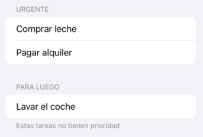

SwiftUI: modelos, listas y navegación¶
En la sesión anterior vimos los elementos más básicos de SwiftUI y una idea central al framework que es la vista como función del estado. Vimos que el estado se puede definir en las vistas con @State pero esta no es una solución escalable para aplicaciones con un estado complejo. Aquí vamos a ver cómo podemos almacenar estado que persista durante toda la vida de la aplicación aunque vayamos cambiando entre vistas, que sea accesible por todas ellas y cómo navegar entre vistas.
1. El modelo en SwiftUI¶
La mayoría de aplicaciones complejas tienen un estado complejo, con muchos datos que probablemente queremos hacer accesibles a varias vistas. En lugar de ir definiendo este estado variable a variable con @State dentro de las vistas es mejor definir uno o varios modelos, clases que almacenen el estado de la app e implementen la lógica de negocio. En SwiftUI podemos hacer que esas clases sean "reactivas", es decir que los cambios actualicen automáticamente la UI simplemente anotándolas con la macro @Observable.
Definir el modelo¶
Por ejemplo, supongamos que queremos hacer una app para gestionar nuestra lista de la compra. Aquí tendríamos una versión inicial de nuestro modelo en la que cada elemento de la lista (cada Item) simplemente tiene un nombre: "pan", "patatas", ... y de momento solo podemos añadir un nuevo item a la lista.
struct Item {
let nombre : String
}
class ListaModel {
var items: [Item] = []
func addItem(nombre: String) {
let new = Item(nombre: nombre)
items.append(new)
}
}
Convertir el modelo en observable¶
El modelo anterior tiene un problema y es que usado junto con @State para asociarlo a la vista, no nos asegura que SwiftUI vaya a actualizar la vista automáticamente al cambiar el modelo, al ser éste una clase y por tanto en Swift un tipo por referencia. Ya vimos que @State no funcionaba bien con tipos por referencia.
Esta sería una interfaz muy simplificada, con un campo de texto para escribir el nombre del producto, un botón para añadirlo, y una subvista para mostrar el total de items. Dejaremos el mostrar la lista para un apartado posterior, ya que es algo más complicado.
struct ListaCompraView: View {
@State private var model = ListaModel()
@State private var nuevoItem = ""
var body: some View {
VStack {
CuentaView(model: model)
TextField("Nuevo producto", text: $nuevoItem)
Button("Añadir") {
guard !nuevoItem.isEmpty else { return }
model.addItem(nombre: nuevoItem)
nuevoItem = ""
}
}
}
}
struct CuentaView : View {
let model : ListaModel
var body : some View {
Text("Hay \(model.items.count) productos")
}
}
Si probamos la aplicación veremos que el número de productos no se actualiza al añadir nuevos, ya que SwiftUI no detecta el cambio en el array items y por tanto no ve la necesidad de repintar CuentaView. Para solucionar el problema, a partir de iOS17 podemos usar la macro @Observable para anotar la clase del modelo que queremos hacer "reactiva" a cambios. De este modo SwiftUI reaccionará automáticamente a cualquier cambio en los valores del modelo.
Aprovechamos para imprimir en la consola la lista de la compra cada vez que añadimos un item ya que no tenemos una interfaz para mostrarla.
//necesario para @Observable
import Observation
//igual que antes
struct Item {
let nombre : String
}
@Observable //Único cambio
class ListaModel {
var items: [Item] = []
func addItem(nombre: String) {
let new = Item(nombre: nombre)
items.append(new)
print("Lista actual:")
items.forEach { print("- \($0.nombre)") }
}
}
Ahora la aplicación ya funcionará correctamente, mostrando el número de productos en la UI y de momento la lista solo por la consola.
SwiftUI y MVVM
Si conoces el patrón de diseño MVVM (Model/View/View Model) te habrás dado cuenta de que se parece bastante a lo que acabamos de comentar. No obstante, al contrario de lo que sucedió con UIkit, donde Apple "abrazó" completamente el patrón de diseño MVC, referenciándolo constantemente en su documentación, con SwiftUI ha evitado referenciar MVVM en la documentación oficial pese a que el paralelismo entre los @Observable de SwiftUI y los "View Model" de MVVM es más que evidente. La cuestión es que siendo "MVVM-ortodoxos" deberíamos implementar además uno o varios "Model", que serían clases Swift que encapsulan el estado y la lógica de negocio de manera independiente de la UI, mientras que los view models contienen solo el estado que queremos mostrar en la UI más cuestiones adicionales como estados de carga ("cargando", "error",...) . Sin embargo, no hay una forma oficial sancionada por Apple de implementar esto, así que puedes organizar tu código en este sentido como mejor te parezca y simplemente olvidarte de MVVM.
Propiedad del modelo: quién lo crea y cuánto "vive"¶
Una vez que tenemos un modelo observable, la siguiente pregunta clave es dónde se crea ese modelo y quién es su propietario. Esto determina cuánto tiempo vive y qué vistas pueden acceder a él.
Modelo poseído por una vista (@State)¶
Este es el caso que hemos visto hasta ahora. Cuando una vista crea y es propietaria del modelo, lo habitual es almacenarlo como @State. Esto hace que la instancia del modelo:
- Se cree una sola vez mientras la vista esté viva
- Se mantenga entre repintados de la vista
- Se destruya cuando la vista desaparece definitivamente
En nuestro ejemplo, ListaCompraView es claramente la dueña del modelo. Otras vistas no pueden acceder a él a menos que se lo pasemos explícitamente, como hacemos con CuentaView.
Este patrón es adecuado cuando:
- El estado pertenece conceptualmente a una pantalla concreta
- No necesitamos compartirlo con muchas vistas no relacionadas
Modelo compartido por toda la app (@Environment)¶
En aplicaciones reales suele interesar que ciertos datos persistan durante toda la vida de la aplicación, aunque naveguemos entre vistas. En SwiftUI esto se consigue inyectando el modelo en el entorno.
Normalmente esto se hace en el punto de entrada de la app:
@main
struct ListaCompraApp: App {
@State private var model = ListaModel()
var body: some Scene {
WindowGroup {
ListaCompraView()
.environment(model)
}
}
}
A partir de ese momento, cualquier vista del árbol puede acceder al modelo usando:
@Environment(ListaModel.self) var model
Por ejemplo:
struct CuentaView: View {
@Environment(ListaModel.self) var model
var body: some View {
Text("Items: \(model.items.count)")
}
}
Este patrón es adecuado cuando:
- El estado representa datos “globales” de la app
- Queremos evitar pasar el modelo manualmente por muchas vistas intermedias
- El modelo debe sobrevivir a la navegación
Inyección y edición del modelo en vistas hijas (@Bindable)¶
Normalmente una vista no trabaja sola. Es habitual que una vista hija necesite no solo leer sino también modificar un modelo que pertenece a otra vista o que viene del entorno.
Supongamos que una vista raíz crea el modelo y lo pasa a una vista hija:
struct ListaCompraView: View {
@State private var model = ListaModel()
var body: some View {
//Esta vista muestra la lista en pantalla, y permite editarla
ListaItemsView(model: model)
}
}
La vista hija recibe el modelo, pero no es su propietaria. Si necesita poder modificarlo y que esos cambios se reflejen en la UI tenemos que pasar el modelo de otra manera.
Cuando una vista recibe un modelo observable y va a modificar directamente sus propiedades, debe declararlo como @Bindable:
struct ListaItemsView: View {
@Bindable var model: ListaModel
var body: some View {
//Aqui listaríamos los items y pondríamos botones para editar, eliminar...
}
}
Esto es el equivalente conceptual a @Binding, pero aplicado a objetos observables completos en lugar de structs o valores simples.
2. Listas (List)¶
En UIKit el componente típico para mostrar datos es el UITableView. En SwiftUI es List. La principal diferencia es que no necesitamos implementar métodos para decir cuántas filas hay o qué celda cargar: simplemente le pasamos la colección de datos y una clausura que define cómo se ve cada fila.
Listas estáticas¶
Al igual que en UIKit existen las tablas estáticas con filas fijas, en SwiftUI también podemos poner elementos fijos en una colección, que no están generados dinámicamente. Podemos dividir la lista en secciones que aparecerán visualmente separadas del resto:
//Fijaros en el estilo más que en el contenido del ejemplo,
//en la realidad estas tareas no serían fijas, sino sacadas de una BD
List {
Section(header: Text("Urgente")) {
Text("Comprar leche")
Text("Pagar alquiler")
}
Section(header: Text("Para luego"), footer: Text("Estas tareas no tienen prioridad")) {
Text("Lavar el coche")
}
}
La lista anterior tendría un aspecto similar al de esta figura:

Listas dinámicas simples¶
Requisito: El protocolo Identifiable¶
Para que SwiftUI pueda gestionar una lista dinámica de forma eficiente (saber qué elemento se ha borrado, movido o editado), necesita que cada elemento sea único. Para ello, nuestros modelos deben implementar el protocolo Identifiable.
Esto normalmente se resuelve añadiendo una propiedad id. Podemos añadir un id a nuestros items de la lista de la compra del siguiente modo:
struct Item: Identifiable {
let id = UUID() // Genera un identificador único automático
let nombre: String
}
Por qué necesita SwiftUI que cada elemento tenga un id
Como hemos comentado es para poder gestionar la lista de forma eficiente. SwiftUI consigue pintar los componentes de forma eficiente encontrando la diferencia entre el aspecto de la vista con el estado anterior y el aspecto actual. Si se borra un item de la lista, SwiftUI necesita saber que se ha borrado ese, no es que se haya cambiado el orden de los demás. Lo más fácil para esto es que cada elemento de un List tenga un id único, lo que elimina la ambigüedad.
Generar la lista¶
Al componente List le podemos pasar como parámetro una colección de elementos para que itere automáticamente por ellos. Ahora podemos sustituir la impresión por consola de la lista de la compra por una lista mostrada en la interfaz:
struct ListaItemsView: View {
@Bindable var model: ListaModel // Recibimos el modelo para poder interactuar
var body: some View {
List(model.items) { item in
HStack {
Image(systemName: "cart")
.foregroundStyle(.blue)
Text(item.nombre)
}
}
}
}
Listas dinámicas complejas con ForEach¶
A veces no queremos que toda la vista sea una lista, o queremos combinar elementos estáticos con dinámicos. Para ello podemos usar ForEach, que nos da un mayor control.
Dentro de un componente List, un ForEach nos permite habilitar funcionalidades avanzadas como el "deslizar para borrar".
List {
Section("Cabecera estática") {
Text("Estos productos son urgentes")
}
Section("Mi Lista") {
ForEach(model.items) { item in
Text(item.nombre)
}
.onDelete(perform: borrarItem) // Solo disponible dentro de ForEach
}
}
Ejemplo Completo: Listar los Items de la Compra¶
Vamos a integrar todo lo aprendido hasta ahora en la sesión para que la ListaCompraView muestre el campo de entrada y la lista de productos debajo.
import SwiftUI
import Observation
// 1. Modelo Identificable
struct Item: Identifiable {
let id = UUID()
let nombre: String
}
@Observable
class ListaModel {
var items: [Item] = []
func addItem(nombre: String) {
items.append(Item(nombre: nombre))
}
func deleteItem(at offsets: IndexSet) {
items.remove(atOffsets: offsets)
}
}
// 2. Vista Principal
struct ListaCompraView: View {
@State private var model = ListaModel()
@State private var nuevoItem = ""
var body: some View {
VStack {
Text("Lista de la compra")
.font(.largeTitle)
// Entrada de datos
HStack {
TextField("Nuevo producto", text: $nuevoItem)
Button("Añadir") {
if !nuevoItem.isEmpty {
model.addItem(nombre: nuevoItem)
nuevoItem = ""
}
}
}
.padding()
// Listado
List {
ForEach(model.items) { item in
Text(item.nombre)
}
.onDelete(perform: model.deleteItem)
}
}
}
}
3. Navegación con NavigationStack¶
A partir de iOS 16, la navegación en SwiftUI se gestiona mediante el componente NavigationStack. Este componente actúa como contenedor y permite gestionar una "pila" de vistas. Es como el "sucesor espiritual" del UINavigationController que ya vimos en UIKit.
Para implementar navegación, necesitamos tres elementos:
NavigationStack: El contenedor principal (solo debe haber uno en la raíz de nuestra jerarquía).NavigationLink: El componente que actúa como "enlace" para disparar la navegación. Solo sabe que la vista destino recibirá un dato determinado, pero no sabe qué vista será..navigationDestination: El modificador que decide qué vista mostrar según el tipo de dato que recibe.
Veamos un ejemplo sencillo en el que tenemos una vista "Principal" que nos permite navegar a una vista "Detalle", pasándole un dato, en este caso un String que la vista Detalle debe mostrar a modo de saludo:
struct VistaPrincipal: View {
var body: some View {
NavigationStack {
VStack(spacing: 20) {
// 1. El botón lanza un String concreto
NavigationLink("Enviar saludo formal", value: "Hola, ¿cómo está usted?")
// 2. Este lanza otro String diferente
NavigationLink("Enviar saludo informal", value: "¡Qué pasa, bro!")
}
.navigationTitle("Inicio")
// 3. El "mapeador": Si recibes un String, abre VistaDetalle
.navigationDestination(for: String.self) { textoRecibido in
VistaDetalle(mensaje: textoRecibido)
}
}
}
}
struct VistaDetalle: View {
let mensaje: String // El dato que recibe
var body: some View {
Text(mensaje)
.font(.largeTitle)
.navigationTitle("Detalle")
}
}
NavigationDestination, que se dispararán según el tipo de dato enviado por NavigationLink. Por ejemplo podría haber otro link que enviara un objeto y otro destination que lo capturara y llevara a una vista distinta a la vista Detalle.
Fíjate también en el Navigation Title que es la forma correcta de poner títulos a las vistas dentro de un navigation stack, no lo hagas con un Text o similar.
Ejemplo más complejo: Navegando al detalle de un producto¶
En nuestra lista de la compra, queremos que al pulsar sobre un producto se abra una pantalla nueva donde podamos ver (y quizás editar) el nombre de ese item.
1. Creación de la vista de detalle¶
Primero definimos la vista de destino. Como queremos editar el modelo, usaremos @Binding. Fijáos en que usamos @Binding porque Item es un struct, si fuera una clase tendríamos que hacerla @Observable y usar @Bindable.
struct DetalleItemView: View {
@Binding var item: Item // Recibimos el item para editarlo
var body: some View {
Form {
TextField("Nombre del producto", text: $item.nombre)
}
.navigationTitle("Editar Producto")
}
}
2. Integración de la navegación en la lista¶
Ahora actualizamos la vista principal. En lugar de mostrar solo el nombre del item, envolvemos cada fila en un NavigationLink. Le pasamos el id del item, para luego poder identificarlo en el navigationDestination.
Al recibir el id en el destination aprovechamos para buscar el item en sí y pasarle un binding a la vista destino, no podemos pasarle simplemente el objeto ya que ésta quiere editarlo.
Cambio en el código del struct Item
Para hacer editable el nombre del Item necesitamos cambiar su definición con let por una con var: var nombre : String.
struct ListaCompraView: View {
@State private var model = ListaModel()
@State private var nuevoItem = ""
var body: some View {
NavigationStack {
// Entrada de datos
HStack {
TextField("Nuevo producto", text: $nuevoItem)
Button("Añadir") {
if !nuevoItem.isEmpty {
model.addItem(nombre: nuevoItem)
nuevoItem = ""
}
}
}
.padding()
// Listado
List {
ForEach(model.items) { item in
// mostramos el nombre del item y asociamos el link a su id
NavigationLink(item.nombre, value: item.id)
}
}
.navigationTitle("Lista Compra")
// Definimos el destino para el tipo de dato "Item"
.navigationDestination(for: UUID.self) { id in
// Buscamos la "fuente de la verdad" en el modelo usando el ID
if let index = model.items.firstIndex(where: { $0.id == id }) {
//Pasamos el binding, para que la vista detalle pueda editar el item
DetalleItemView(item: $model.items[index])
} else {
Text("Producto no encontrado")
}
}
}
}
}
¿No sería más fácil pasarle al destination el índice en el array en vez de el id?
En cierta medida sí, porque nos ahorraríamos buscar el item con firstIndex, pero solo es una línea de código, y en una app real podría ser que la lista se actualizara en background por lo que los índices podrian cambiar. Es cierto que es mucha coincidencia que se actualice la lista justo cuando le damos con el dedo para ver los detalles, pero en general es mucho más seguro identificar los items en una lista con un id que con la posición, y de cualquier modo SwiftUI nos exige un id para cada elemento de la lista, así que no representa demasiado esfuerzo adicional.
4. Modales y Hojas (.sheet)¶
No siempre queremos una pila de vistas en la navegación. Para acciones secundarias como crear un nuevo elemento, lo habitual en iOS es usar una hoja modal.
Aquí tenemos un ejemplo en el que pasamos la creación de items a un modal, en lugar de hacerlo en la misma pantalla que mostramos la lista. Primero tenemos que modificar la vista principal:
struct ListaCompraView: View {
@State private var model = ListaModel()
@State private var mostrandoCreacion = false
var body: some View {
NavigationStack {
List(model.items) { item in
Text(item.nombre)
}
.navigationTitle("Lista de la Compra")
.toolbar {
Button(action: { mostrandoCreacion = true }) {
Image(systemName: "plus")
}
}
// Presentación modal
.sheet(isPresented: $mostrandoCreacion) {
NuevoItemView(model: model) // Vista para crear el item
}
}
}
}
Fijáos cómo podemos controlar la aparición de una modal con un estado que depende de una variable booleana, en este caso mostrandoCreacion, pasándole la variable a .sheet en el parámetro isPresented:. Fijáos también en que pasamos un binding y no el valor de la variable, porque la vista modal cambiará automáticamente el valor a false para cerrarse, así que necesita poder modificar la variable.
Para que quede mejor hemos metido el botón de crear nuevo item en la toolbar del navigation stack. Creamos la toolbar con el método .toolbar como modificador de la vista dentro del stack, en este caso, List, y le añadimos un botón para disparar la acción de mostrar el modal, que será simplemente poner la variable booleana a true.
La vista para crear item sería algo así:
struct NuevoItemView: View {
// Referencia al modelo para poder insertar el nuevo elemento
var model: ListaModel
// Estado local: el usuario escribe aquí temporalmente
@State private var nombreNuevo = ""
// Acción para cerrar el modal (equivalente a dismiss en UIKit)
@Environment(\.dismiss) var dismiss
var body: some View {
NavigationStack {
Form {
TextField("Nombre del producto", text: $nombreNuevo)
}
.navigationTitle("Nuevo Producto")
.toolbar {
// Botón de cancelación (izquierda por defecto en iOS)
ToolbarItem(placement: .cancellationAction) {
Button("Cancelar") {
dismiss()
}
}
// Botón de confirmación (derecha por defecto en iOS)
ToolbarItem(placement: .confirmationAction) {
Button("Añadir") {
if !nombreNuevo.isEmpty {
model.addItem(nombre: nombreNuevo)
dismiss()
}
}
}
}
}
}
}
dismiss para cerrar la vista lo obtenemos del environment de SwiftUI y que la invocación a dismiss pone a false la variable booleana que se asoció al sheet modal, por eso le tuvimos que pasar un binding, como ya discutimos hace un momento.
Fijáos también en que esta vista recibe el modelo entero, que es una clase @Observable. Al ser una clase se pasa por referencia, y al llamar a un método que cambia algo dentro de la clase observable automáticamente SwiftUI detecta los cambios. Por eso no es necesario pasar un binding. Podríamos haber pasado un binding a un nuevo item, pero complicaría el caso en el que al final no lo creamos y pulsamos sobre cancelar.
Vista Modal vs pantalla completa
.sheet no es la única opción. Existe .fullScreenCover para casos donde quieras tapar toda la pantalla (típico en cámaras o editores de fotos), lo cual es el equivalente al modalPresentationStyle = .fullScreen en UIKit.